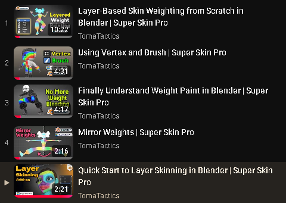
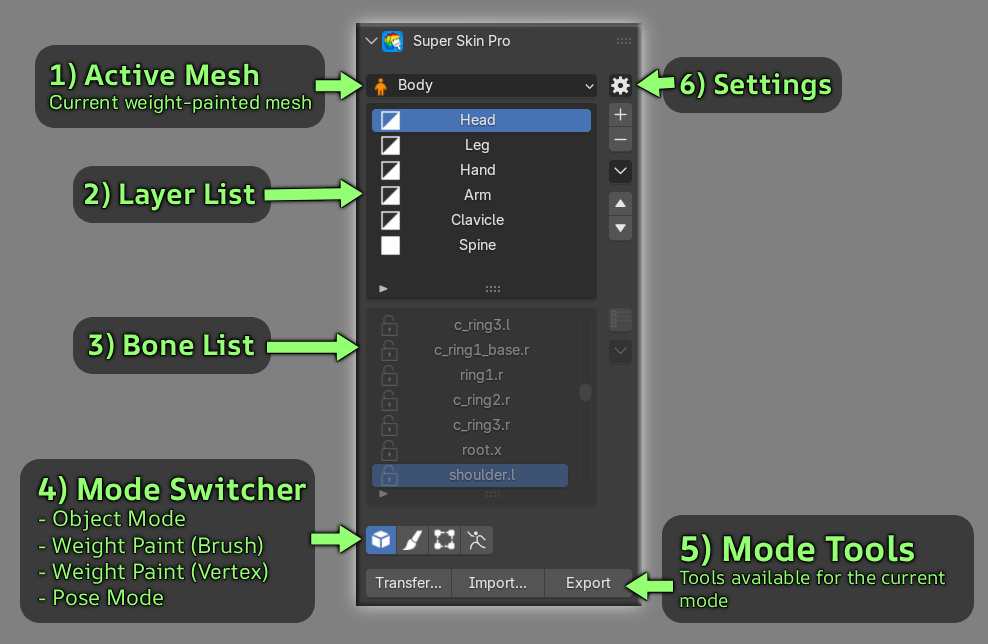
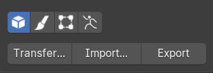

Quick Start¶
For a quick guide on how to use the add-on, watching all the videos in this playlist should be more than enough to get you started:
👉 Watch Super Skin Pro Tutorials Playlist

In the next section below, we’ll take an in-depth look at the interface and its features.
Interface Overview¶

1) Active Bind Mesh¶
Displays the currently selected mesh and provides the option to Bake Layer Data to Blender Native.
2) Layer List¶
Displays all skin weight layers. You can add, delete, reorder, duplicate, merge, and toggle the visibility of each layer. Watch Layer Tutorial
- Enable / Disable: Toggle layer activation by clicking the icon in front of the layer item.
- Rename: Double-click the layer name to rename it.
3) Bone List¶
Displays the active deform bones for the selected layer.
- Lock / Unlock: Click the lock icon in front of any bone to prevent weight bleeding.
- Focus Viewport: Double-click a bone to focus on it in the 3D viewport.
- Filter Influenced Bones: Toggle via the button in the right menu to display only bones with weights.
Viewport Bone Selection
In Weight Paint Mode, you can select bones through the viewport.
List Shortcuts
Both the bone and layer lists support the following shortcuts:
- Ctrl + Click: Add or remove items individually
- Shift + Click: Select a range of items
- Ctrl + A or Alt + Shift + Click: Select all items in the list
- Ctrl + I: Invert selection
4) Mode Switcher¶
Quick buttons for switching between Object Mode, Weight Paint (Brush), Weight Paint (Vertex Selection), and Pose Mode.
5) Mode Tools¶
Tools available for each mode:
👉 Read More Details on Object Mode Tools

👉 Read More Details on Weight Paint Mode Tools